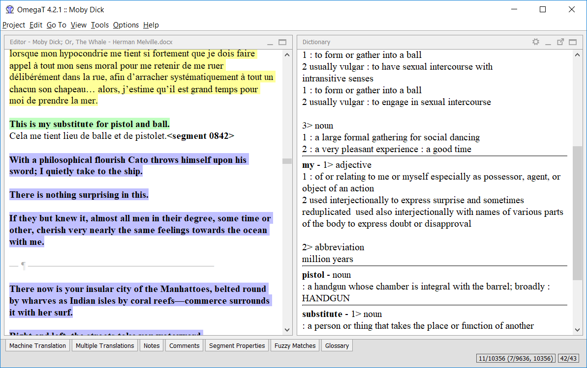

Dictionaries
How
to download and install dictionaries
Dictionaries in OmegaT are based on the StarDict
Platform. To install the
necessary files, proceed as follows:
- Search for the
required language combination -for instance on the StarDict
Platform above or on FreeDict
- Download the file - it
should be a tarball archive (extension tar.bz or tar.bz2).
- Use untar (or equivalent
(for instance winrar in Windows) to extract its contents into
the project folder "Dictionary". There should be
three files, with extensions dict.dz,
idx and ifo.
Note that additionally to "source-target" dictionaries you can, via
Dictionary, get access to information such as:
- Webster's Revised Unabridged
Dictionary (1913)
- Longman Dictionary of
Contemporary English
- Merriam Webster 10th
dictionary
- The Britannica Concise
Encyclopedia
- ...etc
Some of the dictionaries have no strings attached - i.e. are "Free to
use", and some of them, like the selection above, are under
the GPL license. The following example
shows Merriam Webster 10th
dictionary "in action":

Problems
with
dictionaries
If your Dictionary pane is empty, check the following:
- Are your dict files in the
folder (or in one of the subfolders thereof), specified in your Project
file?
Check in the Project Properties window (menu Project →
Properties or
Ctrl+E)?
- Does the folder
contain three files of the same name, with extensions dict.dz, idx and ifo?
If there's just one file with the expected name, then
check its extension. If it is tar.bz,
then you have forgotten to unpack (untar) it.